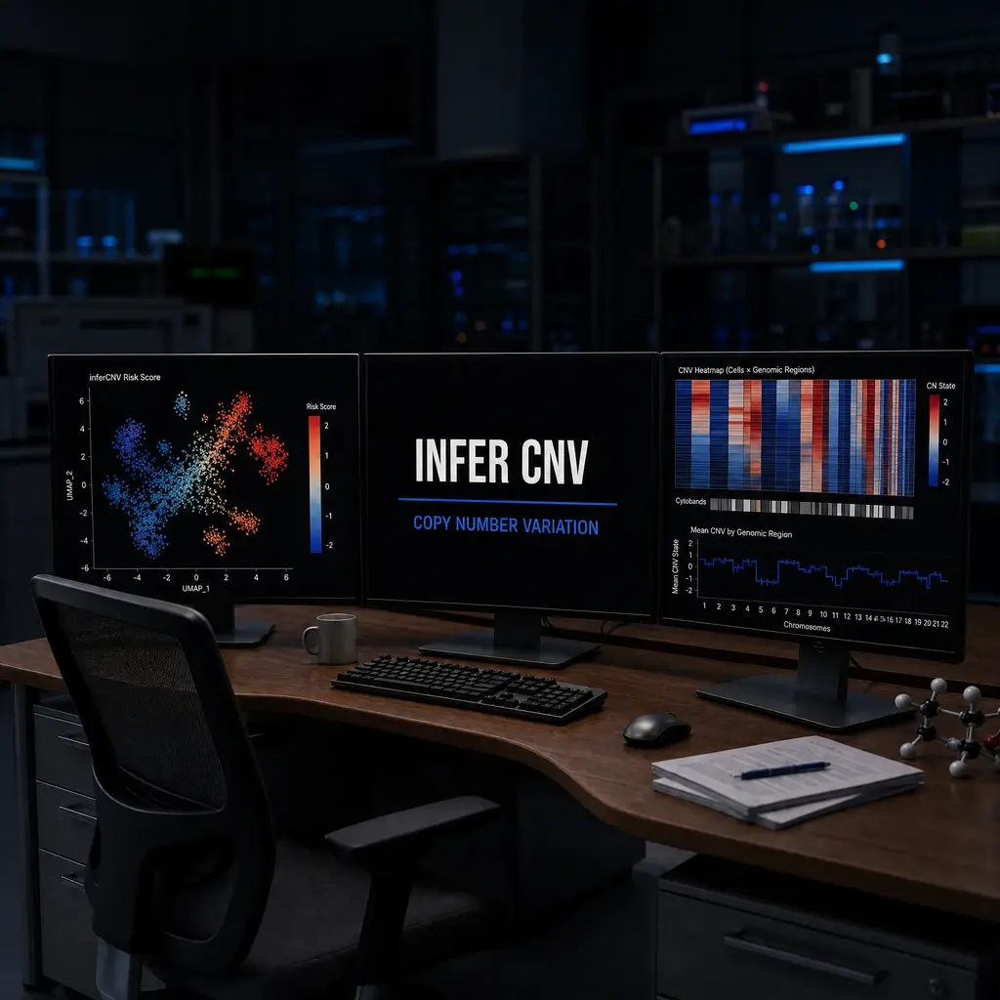
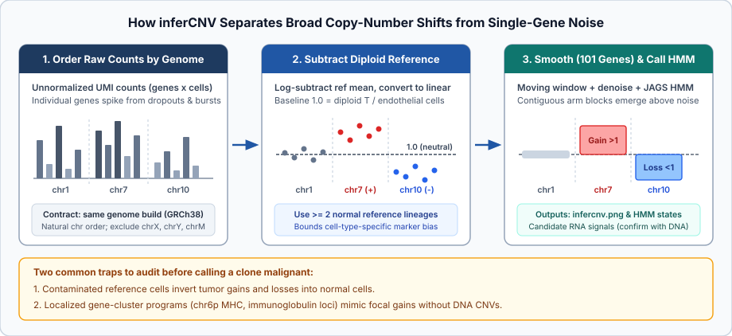
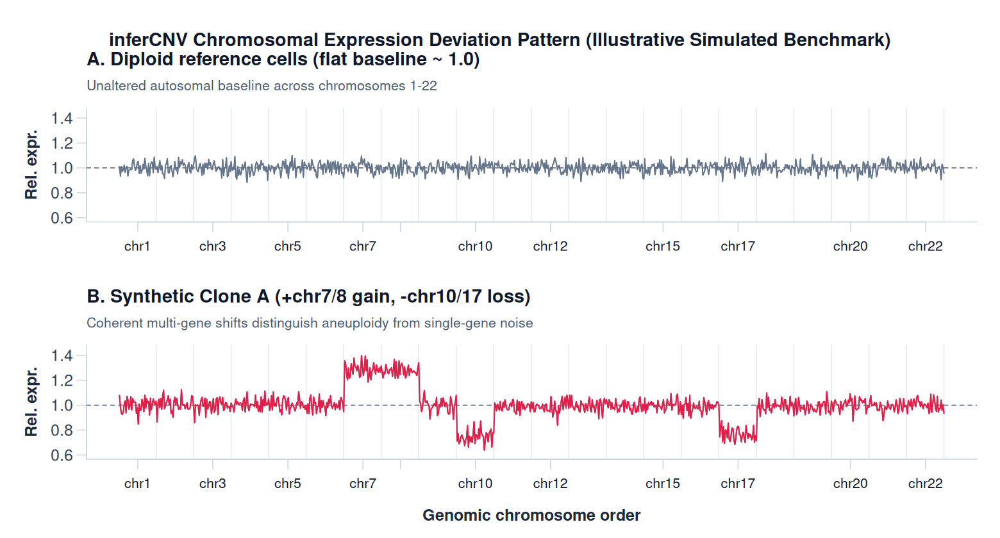

Inferring Copy Number Variation (inferCNV)
Nasir Mahmood Abbasi, PhD
Bioinformatics Educator

In tumor single-cell RNA-seq (scRNA-seq), transcriptional clustering alone can blur malignant cells with stressed normal tissue. Because gaining or losing a large chromosomal segment shifts the average mRNA expression of dozens of adjacent genes together, inferCNV compares genome-ordered expression in query cells against trusted diploid reference cells to separate broad aneuploid clones from normal cells.
Format: Advanced template. Designed for single-cell analysts who already have filtered raw UMI counts, confident non-malignant reference annotations, and a build-matched gene-ordering table. It validates all three inputs, runs the R infercnv workflow with HMM state calling, scores per-cell CNV burden, and guards against treating RNA shifts as direct DNA measurements.
What you will be able to do: Validate raw counts, cell labels, and chromosome coordinates; install and verify native JAGS 4.x with infercnv; execute the R pipeline (or inspect the Python infercnvpy equivalent); compute a per-cell CNV score against internal diploid controls; and diagnose common baseline artifacts.
Prerequisites and time: Completed scRNA-seq QC and cell-type annotation (Choosing and Checking Cell-Type Annotations), R (>= 4.0) with infercnv and JAGS 4.x, and non-malignant reference cells from the same sample or matched normal tissue. Input validation takes ~15 minutes; a full HMM run takes 10-60+ minutes depending on cell count and CPU threads.
1. How inferCNV works and when to use another tool
Direct copy-number assays such as whole-genome sequencing (WGS) or single-cell DNA-seq measure chromosomal DNA dosage directly. Standard scRNA-seq measures mRNA transcripts instead, where any single gene varies widely due to transcriptional bursts, cell-cycle state, and dropout. Copy number variation (CNV) refers to gains or losses of chromosomal regions. When a tumor cell gains a chromosome arm (three or more copies instead of the normal diploid two copies) or loses an arm (one copy), dozens of neighboring genes along that arm tend to shift upward or downward together.
To expose those broad aneuploid (abnormal chromosome copy) patterns above single-gene noise, inferCNV performs three operations in sequence:
- Genome ordering: Filters out sex and mitochondrial chromosomes by default and sorts remaining genes along autosomes (
chr1tochr22) by physical start coordinate. - Diploid reference subtraction: Normalizes raw counts, log-transforms them, subtracts the mean expression of designated reference cells (for example infiltrating T cells or endothelial cells) to center residuals around
0in log space, and later converts back to linear relative expression (2^x) so neutral genes center around1.0. - Moving-window smoothing and segmentation: Averages residuals across a sliding block of consecutive genes (
window_length = 101by default), applies noise thresholding (denoise = TRUE), and optionally fits a Hidden Markov Model (HMM = TRUE) to segment contiguous gains and losses.

inferCNV: sorting genes by genomic coordinate and averaging across 101-gene windows cancels single-gene noise while exposing broad arm-scale gains and losses.Choosing an scRNA-seq CNV inference tool
| Tool | Required input | Strengths | When to choose another method |
|---|---|---|---|
infercnv (R / Bioconductor) | Raw unnormalized counts, cell labels, gene coordinates | JAGS-based 3-state (i3) or 6-state (i6) HMM calls, subcluster tree partitioning, detailed stage objects | Slow on >20,000 cells without reference subsampling and multi-threading |
infercnvpy (Python) | Log-normalized adata.X, coordinates in adata.var | Fast Scanpy/AnnData integration, built-in cnv_score() and Leiden clustering on X_cnv | Does not include the JAGS Bayesian HMM state model |
Numbat (R) | Raw counts + aligned BAMs for SNP allele frequencies | Combines expression with haplotype-phased B-allele frequency (BAF); detects copy-neutral LOH | Requires aligned BAM/pileup access and SNP phasing |
CopyKAT / SCEVAN (R) | Raw UMI count matrix | Identifies diploid baseline cells automatically when normal annotations are uncertain | Still expression-derived; validate calls against canonical cell-type markers |
2. Prepare and validate the three input files
This template assumes you have already removed empty droplets, low-quality cells, and obvious doublets, and placed three prepared files in your working directory:
counts_matrix.rds: raw, unnormalized integer counts (genes as rows, cell barcodes as columns, stored as a basematrixor sparsedgCMatrix). Never pass log-normalized or z-scored values to Rinfercnv; it performs its own total-sum normalization and log2 scaling.cell_annotations.tsv: tab-delimited table with header columnscell_idandcell_type. Everycell_idmust match a column name incounts_matrix.rds.gene_ordering.tsv: tab-delimited table with header columnsgene_symbol,chromosome,start, andendfrom one declared genome assembly (for example GRCh38/hg38 or GRCh37/hg19). Identifiers ingene_symbolmust match the row names ofcounts_matrix.rds(HGNC symbols or Ensembl IDs, without mixing).
Example cell_annotations.tsv:
cell_id cell_type
CELL_001 T_cell
CELL_002 Endothelial
CELL_003 Malignant_like
CELL_004 Malignant_likeExample gene_ordering.tsv (GRCh38):
gene_symbol chromosome start end
NOC2L chr1 943527 960714
EGFR chr7 55019017 55211628
PTEN chr10 87863625 87971930Three input traps that silently corrupt heatmaps:
- Chromosome naming mismatch:
CreateInfercnvObject()defaults tochr_exclude = c("chrX", "chrY", "chrM"). If your coordinates use Ensembl chromosome names (X,Y,MT), passchr_exclude = c("X", "Y", "MT")explicitly so sex-linked and mitochondrial genes do not appear as artificial blocks. - Alphabetical chromosome sorting: Standard lexical sorting places
chr10right afterchr1. Ordergene_ordering.tsvin natural chromosome order (chr1,chr2, ...,chr22) and ascendingstartcoordinate before running. - Single or contaminated reference group: Select at least two independent normal lineages (such as
T_cellandEndothelial) from the same sample when possible. Including misannotated tumor cells insideref_group_namessubtracts real CNVs from the baseline and creates mirror-image artifacts in normal cells.
Before opening R, run a fast shell check on your two TSV tables to catch malformed coordinates, duplicate gene IDs, or tiny reference groups:
awk -F'\t' 'NR>1 {if (NF!=4 || $3+0<1 || $3+0>$4+0) bad++; seen[$1]++}
END {for (g in seen) if (seen[g]>1) dup++;
printf "Genes: %d | Bad coords: %d | Duplicate IDs: %d\n", NR-1, bad+0, dup+0}' gene_ordering.tsv
awk -F'\t' 'NR>1 {counts[$2]++} END {for (c in counts) printf "%s\t%d\n", c, counts[c]}' cell_annotations.tsv | sortObserved output (executed locally on the 3-gene and 4-cell example tables above):
Genes: 3 | Bad coords: 0 | Duplicate IDs: 0
Endothelial 1
Malignant_like 2
T_cell 13. Install JAGS 4.x and verify R setup
The R package requires the native JAGS 4.x library as well as the R package rjags. Installing R packages alone does not install the system JAGS binary. On Ubuntu 24.04, install JAGS first in a terminal (for macOS or Windows, follow the official inferCNV installation guide):
sudo apt-get update
sudo apt-get install jagsNext, run this one-time setup check inside the R environment you will use for analysis. Passing update = FALSE prevents unintended upgrades across existing Bioconductor libraries:
# Setup only: do this before opening the analysis script below.
if (!requireNamespace("BiocManager", quietly = TRUE)) {
install.packages("BiocManager", repos = "https://cloud.r-project.org")
}
BiocManager::install("infercnv", ask = FALSE, update = FALSE)
needed <- c("rjags", "infercnv")
missing <- needed[!vapply(needed, requireNamespace, logical(1), quietly = TRUE)]
if (length(missing)) stop("Setup incomplete: ", paste(missing, collapse = ", "))
message("JAGS: ", as.character(rjags::jags.version()))
message("infercnv: ", as.character(packageVersion("infercnv")))Example output (illustrative):
JAGS: 4.3.2
infercnv: 1.18.1Stop-and-fix check: If rjags fails during installation with configure: error: "JAGS library not found" or fails to load, the native JAGS binary is missing or not on your PATH/PKG_CONFIG_PATH. Install JAGS 4.x first, then reinstall rjags before continuing.
4. Run the inferCNV workflow in R (or Python)
Start R in the directory holding your three prepared files. Notice two safety checks in the script below: it validates sparse dgCMatrix values directly via counts@x (avoiding memory blowups from evaluating millions of zeroes on >20,000-cell datasets), and it refuses to write into a non-empty output directory because infercnv::run() resumes from intermediate checkpoint files if old stage objects are present.
# Start R in the directory containing the three prepared input files.
# Do not install inside this analysis script; follow official Bioconductor
# installation instructions, then record R.version.string and packageVersion().
stopifnot(requireNamespace("infercnv", quietly = TRUE))
message("R: ", R.version.string, "; infercnv: ", as.character(packageVersion("infercnv")))
library(infercnv)
# 1) Load inputs. Replace filenames as needed; record assembly and mapping.
# gene_ordering.tsv coordinates must match the identifiers/assembly of counts.
counts <- readRDS("counts_matrix.rds") # gene x cell matrix (raw counts)
annotations <- read.delim("cell_annotations.tsv", header=TRUE, stringsAsFactors=FALSE)
gene_order <- read.delim("gene_ordering.tsv", header=TRUE, stringsAsFactors=FALSE)
# Check cell IDs, raw integer counts, and coordinate metadata before writing inputs.
stopifnot(!anyDuplicated(colnames(counts)), !anyDuplicated(annotations$cell_id))
stopifnot(setequal(colnames(counts), annotations$cell_id))
stopifnot(all(c("cell_id", "cell_type") %in% names(annotations)))
stopifnot(!anyNA(annotations$cell_type), all(nzchar(annotations$cell_type)))
stopifnot(is.matrix(counts) || inherits(counts, "Matrix"))
count_vals <- if (inherits(counts, "dgCMatrix")) counts@x else as.numeric(counts)
stopifnot(all(is.finite(count_vals)), all(count_vals >= 0), all(count_vals == floor(count_vals)))
stopifnot(all(c("gene_symbol", "chromosome", "start", "end") %in% names(gene_order)))
stopifnot(!anyDuplicated(gene_order$gene_symbol))
stopifnot(!anyNA(gene_order$gene_symbol), all(nzchar(gene_order$gene_symbol)))
stopifnot(!anyNA(gene_order$chromosome), all(nzchar(gene_order$chromosome)))
stopifnot(all(is.finite(gene_order$start)), all(is.finite(gene_order$end)))
stopifnot(all(gene_order$start >= 1), all(gene_order$start <= gene_order$end))
matched_genes <- intersect(rownames(counts), gene_order$gene_symbol)
coverage <- length(matched_genes) / nrow(counts)
message(sprintf("Gene-order overlap: %d / %d count genes (%.1f%%)",
length(matched_genes), nrow(counts), 100 * coverage))
if (length(matched_genes) == 0L) stop("No shared genes: inspect identifiers, mapping, and assembly before proceeding")
unmatched_genes <- setdiff(rownames(counts), matched_genes)
if (length(unmatched_genes) > 0L) {
print(utils::head(unmatched_genes, 10))
warning("Unmatched count genes remain: review the reported IDs and document exclusions before analysis")
}
# 2) Write headerless annotation file expected by inferCNV.
write.table(annotations[,c("cell_id","cell_type")],
file="infercnv_annotations.tsv", sep="\t", quote=FALSE, row.names=FALSE, col.names=FALSE)
# 3) Write headerless gene ordering file: gene, chromosome, start, end.
write.table(gene_order[,c("gene_symbol","chromosome","start","end")],
file="infercnv_gene_ordering.tsv", sep="\t", quote=FALSE, row.names=FALSE, col.names=FALSE)
# 4) Create the inferCNV object.
# Choose reference groups: non-malignant diploid cell types in 'cell_type'.
reference_groups <- c("T_cell","B_cell","Endothelial") # adjust to your annotations
infercnv_obj <- CreateInfercnvObject(
raw_counts_matrix = counts,
annotations_file = "infercnv_annotations.tsv",
delim = "\t",
gene_order_file = "infercnv_gene_ordering.tsv",
ref_group_names = reference_groups
)
# 5) Run inferCNV.
# - cutoff: 0.1 for sparse 10x UMI counts; 1 for Smart-seq2 full-length counts.
# - out_dir: must be empty so old checkpoint objects are never reused.
out_dir <- "infercnv_output"
if (dir.exists(out_dir) && length(list.files(out_dir, all.files = TRUE, no.. = TRUE))) {
stop("Choose an empty output directory for a new run; do not mix old and new results")
}
dir.create(out_dir, showWarnings = FALSE)
infercnv_obj <- infercnv::run(
infercnv_obj,
cutoff = 0.1,
out_dir = out_dir,
cluster_by_groups = TRUE,
denoise = TRUE,
HMM = TRUE
)
# 6) Save the returned object and verify it can be read back.
final_path <- file.path(out_dir, "returned_final_infercnv.rds")
saveRDS(infercnv_obj, final_path)
final_check <- readRDS(final_path)
stopifnot(methods::is(final_check, "infercnv"))
methods::validObject(final_check)
stopifnot(nrow(final_check@expr.data) > 0L, ncol(final_check@expr.data) > 0L)
stopifnot(all(is.finite(final_check@expr.data)))
stopifnot(all(colnames(final_check@expr.data) %in% colnames(counts)))
stopifnot(identical(rownames(final_check@expr.data), rownames(final_check@gene_order)))
message("Retained ", nrow(final_check@expr.data), " genes and ",
ncol(final_check@expr.data), " cells; saved object: ", final_path)
# 7) HMM=TRUE must produce readable HMM region reports, not just a heatmap.
# Prefixes vary by release; the documented region-report suffix is used here.
hmm_reports <- list.files(out_dir, pattern = "\\.pred_cnv_regions\\.dat$",
full.names = TRUE, recursive = TRUE)
if (!length(hmm_reports)) stop("No HMM region report: inspect the run log and installed-version output documentation")
hmm_type <- final_check@options$HMM_type
if (length(hmm_type) != 1L || !hmm_type %in% c("i6", "i3")) {
stop("Unrecognized HMM type: review installed-version documentation before checking state codes")
}
legal_states <- if (hmm_type == "i6") 1:6 else 1:3
for (path in hmm_reports) {
report <- read.delim(path, header = TRUE, check.names = FALSE)
stopifnot(all(c("cell_group_name", "cnv_name", "state", "chr", "start", "end") %in% names(report)))
if (nrow(report)) {
stopifnot(all(report$state %in% legal_states))
stopifnot(all(is.finite(report$start)), all(is.finite(report$end)))
stopifnot(all(report$start >= 1), all(report$start <= report$end))
}
message(basename(path), ": ", nrow(report), " reported regions")
}
writeLines(capture.output(sessionInfo()), file.path(out_dir, "session-info.txt"))
print(list.files(out_dir, recursive = TRUE))Key infercnv::run() parameters and scaling guidance
| Parameter | Default / starting value | Purpose and adjustment rule |
|---|---|---|
cutoff | 0.1 (10x) or 1 (Smart-seq2) | Minimum mean count per gene across cells. Dropping below 0.1 on sparse 10x data floods windows with zero-inflated genes; 1 avoids noisy low-depth genes in deeper full-length libraries. |
window_length | 101 | Number of consecutive genes per moving window. Widen (for example 151) if noisy spikes dominate; narrow only on dense, high-depth datasets. |
analysis_mode | "samples" (or "subclusters") | "samples" models each annotation group together; "subclusters" partitions heterogeneous tumor groups via tumor_subcluster_partition_method (such as "leiden" or "random_trees") before HMM calling. |
denoise & sd_amplifier | TRUE, 1.5 | Shrinks residual values near 1.0 within sd_amplifier standard deviations of the reference noise floor. Increase sd_amplifier (for example 2.0) if background noise remains speckled. |
HMM_type & BayesMaxPNormal | "i6", 0.5 | "i6" calls 6 states (0x to >3x copies); "i3" calls loss/neutral/gain. BayesMaxPNormal filters predicted regions whose posterior probability of being normal exceeds the threshold (lower = stricter). |
num_threads | 4 | Match allocated CPU cores. On large cohorts (>20,000 cells), also subsample oversized normal clusters to 500-1,000 high-QC cells per normal lineage to bound JAGS HMM runtime. |
Verified execution note (software check, not clinical validation): The R route above was executed on Ubuntu 24.04.4 with R 4.3.3, infercnv 1.18.1, and JAGS 4.3.2 using 170 genuine public cells from a CELLxGENE-curated GSE84465 Smart-seq2 glioblastoma subset and 20,374 GRCh37 gene matches. The run retained 14,319 genes across all 170 cells with denoise = TRUE and HMM = TRUE, and the reloaded returned_final_infercnv.rds object passed all coordinate, cell-identity, and HMM report schema assertions. Because cutoff = 0.1 was retained specifically to test the displayed template rather than tuned for Smart-seq2, and candidate reference labels were not independently verified as diploid, treat this as execution verification of the code rather than biological proof.
Python alternative: infercnvpy on AnnData
Unlike R infercnv, the Python package infercnvpy expects normalized, log-transformed expression in adata.X and genomic coordinates (chromosome, start, end) in adata.var. Populate coordinates with cnv.io.genomic_position_from_gtf() or cnv.io.genomic_position_from_biomart() before running:
# API sketch for Python / Scanpy workflows (requires log-normalized adata.X
# and chromosome, start, end columns in adata.var).
import infercnvpy as cnv
cnv.tl.infercnv(
adata,
reference_key="cell_type",
reference_cat=["T_cell", "B_cell", "Endothelial"],
window_size=100,
step=10,
)
# Compute CNV PCA and neighborhood graph, then cluster, score (defaults to groupby="cnv_leiden"), and plot
cnv.tl.pca(adata)
cnv.pp.neighbors(adata)
cnv.tl.leiden(adata)
cnv.tl.cnv_score(adata)
cnv.pl.chromosome_heatmap(adata, groupby="cnv_leiden")5. Inspect heatmaps, HMM calls, and per-cell CNV scores
Once infercnv::run() finishes, check both the visual heatmaps and the numerical HMM region tables in infercnv_output/:
infercnv.preliminary.pngandinfercnv.png: preliminary (pre-denoising) and final smoothed heatmaps. Rows are cells grouped by annotation (references on top, observations below) and columns are genes ordered fromchr1tochr22. Values center around1.0(white = neutral, red >1.0= putative gain, blue <1.0= putative loss).*.pred_cnv_regions.dat: HMM region predictions listing each cell group, chromosome interval, and integer state. Under the default"i6"model:1= complete loss,2= loss of one copy,3= neutral diploid,4= gain of one copy,5= gain of two copies,6= >2 extra copies. Under"i3":1= loss,2= neutral,3= gain.
Example HMM region output (abbreviated, illustrative format):
cell_group_name cnv_name state chr start end
observations.Malignant_like chr7-region_1 4 chr7 54120 159138663
observations.Malignant_like chr10-region_2 2 chr10 93142 133797422Remember that zero retained regions can be a valid outcome after neutral-state filtering or stringent BayesMaxPNormal thresholds, so inspect both unfiltered HMM outputs and the continuous infercnv.png heatmap before assuming a run failed.

Quantify per-cell CNV burden against internal diploid controls
Visual heatmaps show arm structure, while a per-cell CNV score summarizes how far each cell deviates from the internal reference baseline across the genome. For example, in IDH-wildtype glioblastoma cohorts such as Darmanis et al. (GSE84465), neoplastic cells classically pair chromosome 7 gain with chromosome 10 loss while infiltrating immune and vascular cells stay near 1.0. Compare every observation cluster against quantiles (such as the median and 99th percentile) of your internal reference cells, and always stratify summaries by sample or patient:
# Compute per-cell mean-squared CNV deviation from the neutral baseline (centered near 1.0)
expr_mat <- final_check@expr.data
neutral_center <- stats::median(expr_mat[, unlist(final_check@reference_grouped_cell_indices), drop = FALSE])
cnv_score <- colMeans((expr_mat - neutral_center)^2)
score_df <- data.frame(
cell_id = names(cnv_score),
cnv_msq = as.numeric(cnv_score),
cell_type = annotations$cell_type[match(names(cnv_score), annotations$cell_id)],
is_reference = annotations$cell_type[match(names(cnv_score), annotations$cell_id)] %in% reference_groups
)
# Compare candidate malignant clusters against the 99th percentile of internal reference cells
ref_q99 <- stats::quantile(score_df$cnv_msq[score_df$is_reference], probs = 0.99, na.rm = TRUE)
print(aggregate(cnv_msq ~ cell_type + is_reference, data = score_df, FUN = stats::median))
message("99th percentile of diploid reference CNV score: ", round(ref_q99, 5))How to interpret CNV scores responsibly:
- High
cnv_msqis a candidate signal, not proof of malignancy: Check whether the elevation comes from broad whole-arm blocks across multiple chromosomes rather than a single localized gene cluster (such as chr6p MHC or immunoglobulin loci) or cell-cycle genes. - Near-diploid tumors score near the baseline: Many acute leukemias, pediatric tumors, and fusion-driven sarcomas have few or no large arm-level CNVs. A low CNV score does not rule out malignancy; pair expression analysis with mutation/fusion calling or haplotype-aware BAF methods (
Numbat) when BAMs are available. - Focal events and balanced rearrangements: Single-exon deletions, focal amplifications narrower than the smoothing window, and balanced translocations fall below moving-window resolution and require DNA sequencing or FISH.
6. Troubleshooting and practice check
| Symptom | Likely cause | Actionable fix |
|---|---|---|
| Flat or washed-out heatmap | cutoff too high for sparse 10x data (for example 1 instead of 0.1), mismatched genome build, or contaminated reference cells | Verify gene overlap (>10,000 genes typically retained for human 10x), match build (GRCh38 vs GRCh37), and restrict ref_group_names to high-confidence diploid lineages |
| Fragmented spikes scattered across chromosomes | Log-normalized/scaled values passed instead of raw counts, strong batch effects, or narrow smoothing window | Pass raw integer UMI counts to R infercnv; inspect infercnv.preliminary.png; adjust window_length or sd_amplifier; run per sample/patient when batches confound |
| Reference cells show faint mirror-image gains/losses | Reference cluster contains mislabeled tumor cells or tumor-immune doublets | Audit reference cells with canonical markers and doublet scores; split into at least two independent normal cell types (such as T_cell + Endothelial) |
| OOM crash or stalled JAGS HMM on >20,000 cells | Dense evaluation across zeroes or thousands of reference cells inflating JAGS | Validate counts@x on dgCMatrix, increase num_threads, and downsample oversized reference groups to 500-1,000 cells per normal cell type |
Practice check: diagnose a contaminated reference baseline
Suppose you run infercnv on a 10x glioblastoma sample using "Myeloid" as your only reference group. In infercnv.png, the "Myeloid" reference rows show faint blue across chr7 and faint red across chr10, while "Cluster_3" looks nearly neutral and your reference 99th-percentile CNV score (ref_q99) is unexpectedly high. Identify the two issues in this setup and explain how to fix them.
Check worked diagnosis
First, "Myeloid" likely contains misannotated malignant cells or tumor-macrophage doublets carrying +chr7 / -chr10, raising the reference mean on chr7 and lowering it on chr10 so tumor cells appear neutral while diploid cells invert. Second, relying on a single reference cell type makes myeloid-specific transcriptional blocks (such as chr6p MHC class II genes) appear as relative losses in non-myeloid cells. Fix: filter doublets, audit "Myeloid" with lineage markers (PTPRC, CD68, C1QA vs tumor markers EGFR/SOX2), add at least one second normal lineage (such as T_cell or Endothelial) to ref_group_names, and re-run into a fresh empty output directory.
7. Next steps and references
- Verify your reference cell labels and marker purity using Choosing and Checking Cell-Type Annotations and Single-Cell RNA-seq Quality Control.
- Archive your exact
counts_matrix.rds, annotation/gene-ordering tables, genome build, andsession-info.txtalongsideinfercnv_output/. - Confirm prioritized malignant clones with orthogonal DNA assays such as shallow WGS, FISH, or exome/panel sequencing (Whole Exome Sequencing (WES): Variant Calling), or continue broader downstream single-cell analysis in Single-Cell RNA-seq Downstream Analysis.
References
- Patel AP, Tirosh I, Trombetta JJ, et al. (2014). Single-cell RNA-seq highlights intratumoral heterogeneity in primary glioblastoma. Science, 344(6190), 1396-1401 (origin of moving-window scRNA-seq CNV inference). doi:10.1126/science.1254257
- Tirosh I, Izar B, Prakadan SM, et al. (2016). Dissecting the multicellular ecosystem of metastatic melanoma by single-cell RNA-seq. Science, 352(6282), 189-196. doi:10.1126/science.aad0501
- Gao R, Bai S, Henderson YC, et al. (2021). Delineating copy number and clonal substructure in human tumors from single-cell transcriptomes. Nature Biotechnology, 39, 599-608 (
CopyKAT). doi:10.1038/s41587-020-00795-2 - De Falco A, Caruso F, Su XD, et al. (2023). A variational algorithm to detect the clonal copy number substructure of tumors from scRNA-seq data. Nature Communications, 14, 1074 (
SCEVAN). doi:10.1038/s41467-023-36790-9 - Gao T, Soldatov R, Sarkar H, et al. (2023). Haplotype-aware analysis of somatic copy number variations from single-cell transcriptomes. Nature Biotechnology, 41, 417-426 (
Numbat, combining expression with allele frequencies). doi:10.1038/s41587-022-01468-y - inferCNV GitHub repository (Broad Institute), File Definitions, Running inferCNV, and Output Files
- Bioconductor infercnv package and infercnvpy documentation
No fixed software versions or dataset are supplied here. Before analysis, record R.version.string, packageVersion("infercnv"), the genome assembly, and identifier mapping; consult the official documentation for your installed release. Report errors through the Contact page
Author: Nasir Mahmood Abbasi, PhD - Category: Advanced Single-Cell Analysis